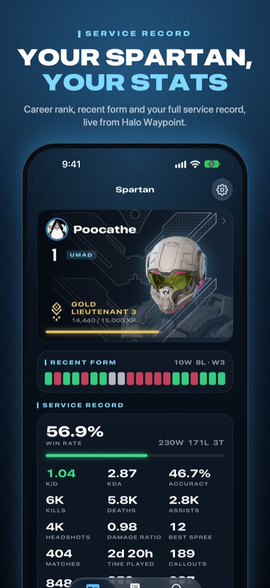
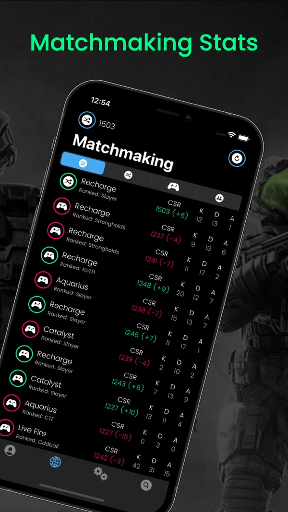

Infinite Spartan Stats
Halo Infinite multiplayer stats
Track your Halo Infinite multiplayer stats: rank and CSR by playlist, kill/death ratio, medals, custom games, and match history. Search for other Spartans and see theirs too.




Features
- Your stats CSR by playlist, core stats, K/D, and medals earned.
- Match history Recent matchmaking and custom games.
- Search Spartans Look up any gamertag and view their stats and matches.
Support
Questions, bugs, or ideas? Reach me on LinkedIn. Include your device and iOS version if something's broken.
Infinite Spartan Stats is an unofficial app and is not affiliated with, endorsed by, or sponsored by Microsoft, Xbox, or 343 Industries / Halo Studios. Halo is a trademark of Microsoft Corporation.